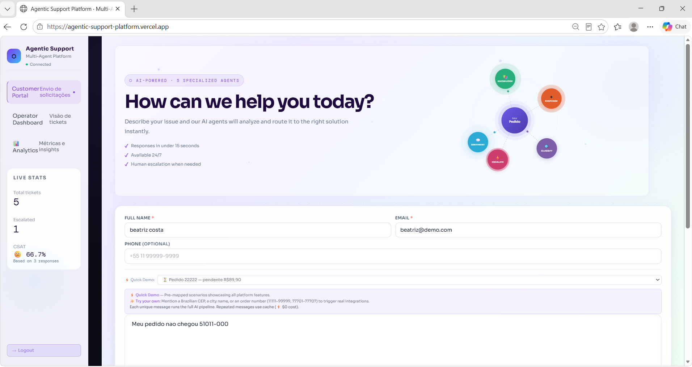
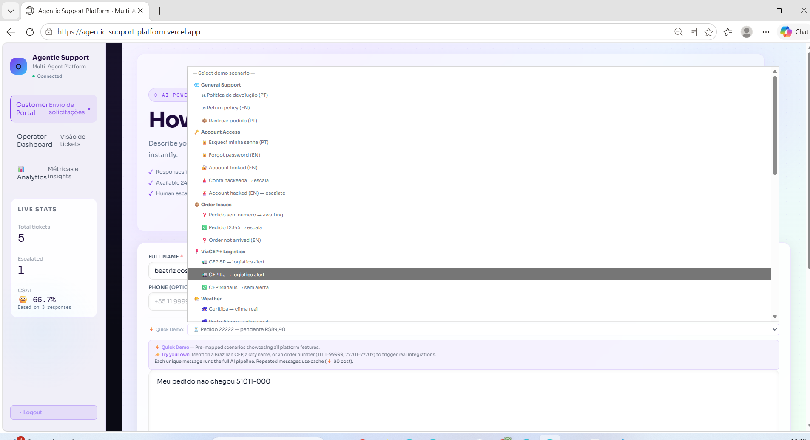
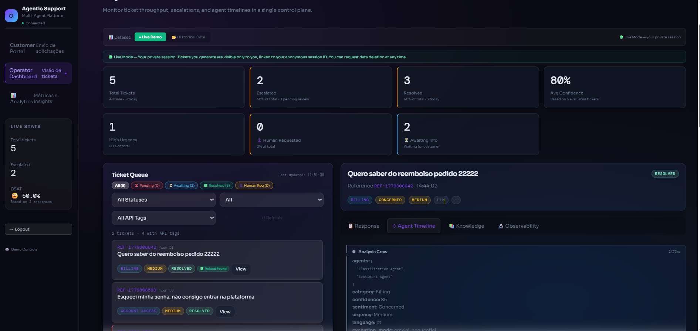
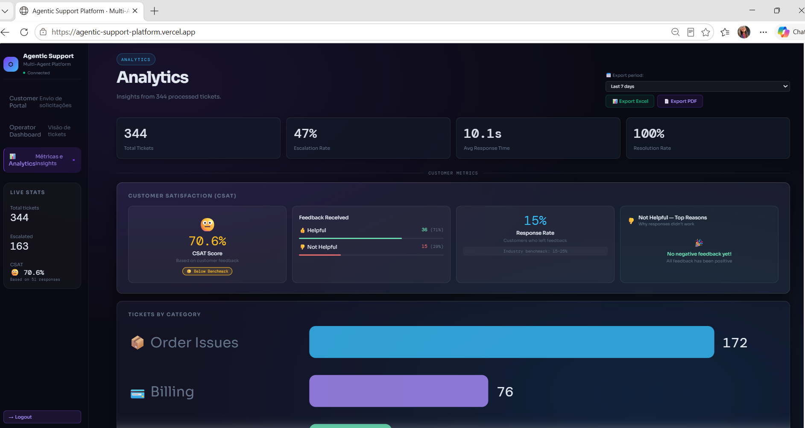
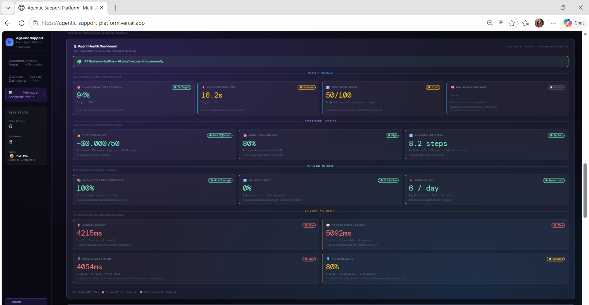

Agentic Support Platform
May 2026 CrewAI Flow FastAPI Claude Haiku 4.5 Claude Sonnet 4.6 Vanilla JS
Multi-agent AI customer support platform that combines CrewAI Flow orchestration, real-time external APIs, and LLM-as-judge quality evaluation to automate e-commerce support at scale.

Problem & Target Market
E-commerce companies face high support ticket volumes with inconsistent response quality, costly human escalations, and no visibility into AI decision-making. Generic chatbots hallucinate, fail to use real operational data, and offer no HITL oversight for operators.
This platform targets e-commerce companies needing intelligent customer support automation — teams that want AI handling routine inquiries while keeping humans in control of escalations, with full observability into every agent decision.
Solution Overview
A 9-step CrewAI Flow pipeline processes every ticket: parallel classification and sentiment analysis → deterministic routing with 13 priority levels → real-time API enrichment (ViaCEP + OpenWeatherMap + Refund DB) → knowledge RAG synthesis → LLM response generation → background quality evaluation by a stronger judge model.
Operators get a full dashboard with HITL approve/reject/await controls, per-agent token observability, cost forecasting, and Excel + PDF export. Customers get personalized responses in ~8 seconds grounded in real operational data — never hallucinated facts.
Key Features
- 3 CrewAI Crews, 6 specialized AI agents — Analysis (parallel), Response (sequential), Evaluation (background, non-blocking)
- CrewAI Flow orchestrating full 9-step pipeline — state-managed, deterministic handoffs between LLM and rules-based steps
- Real-time integrations — ViaCEP (address/logistics), OpenWeatherMap (weather severity), SQLite Refund DB (10 seed records)
- LLM-as-judge quality evaluation — Claude Sonnet 4.6 scores Haiku responses on faithfulness, relevance, empathy, and completeness (0–10, grades A–F)
- Human-in-the-loop (HITL) — Operators can approve, reject, or set awaiting on escalated tickets; auto-resolved tickets show no HITL buttons
- Progressive escalation routing — 13 priority levels; system always follows auto-resolve → contextual → awaiting → escalate, never jumps to human without context
- JWT guest authentication — 24h stateless sessions, complete ticket isolation per guest ID, LGPD-compliant auto-deletion
- Export to Excel (4 sheets) + PDF (3 pages) — date-filtered, with KPI cards, cost forecasting, and agent performance breakdowns
- Dataset toggle — Live (user-isolated, 24h auto-delete) vs Historical (491 demo tickets)
- Full observability — per-agent token usage, cost per ticket (~$0.003272), hallucination rate card, cost forecasting (daily/weekly/monthly/yearly)
Multi-agent Crew Design
| Agent | Role | Model | Trigger |
|---|---|---|---|
| Classification Agent | Category + language detection | Claude Haiku 4.5 | Every ticket (Crew 1, parallel) |
| Sentiment Agent | Emotion + urgency analysis | Claude Haiku 4.5 | Every ticket (Crew 1, parallel with Classification) |
| Knowledge Agent | RAG synthesis from knowledge base | Claude Haiku 4.5 | After routing (Crew 2, sequential) |
| Response Agent | Personalized response generation | Claude Haiku 4.5 | After knowledge synthesis (Crew 2, sequential) |
| Summary Agent | 2-line operator summary | Claude Haiku 4.5 | Background, non-blocking (Crew 3) |
| Quality Agent | Cross-model evaluation (LLM-as-judge) | Claude Sonnet 4.6 | Background, non-blocking (Crew 3) |
Technical Architecture
- Frontend — Vanilla JS, no framework, ~8000 lines; dual-view: Customer Portal (light violet) + Operator Dashboard (dark glassmorphism)
- Backend — FastAPI + CrewAI Flow + Python 3.11; SQLAlchemy + Neon PostgreSQL (AWS São Paulo)
- LLM — Claude Haiku 4.5 (6 agents) + Claude Sonnet 4.6 (judge); ~$0.003272 per ticket
- Auth — JWT guest tokens via python-jose; 24h expiry, browser-only storage, never persisted to DB
- External APIs — ViaCEP (httpx async, ~420ms), OpenWeatherMap (httpx async, ~380ms), SQLite refund + pending actions DBs
- Export — openpyxl (Excel, 4 sheets) + reportlab (PDF, 3 pages)
- Knowledge RAG — Token-controlled local retrieval; max 3 snippets × 800 chars = ~600 tokens (~88% token savings vs full docs)
Deployment
Backend: Railway (primary, no cold start, Hobby plan) + Render (backup, free tier). Frontend: Vercel (CDN, free). Database: Neon PostgreSQL (serverless, AWS São Paulo, free tier). Monitoring: UptimeRobot (5-min ping to prevent cold start).
Deploy flow: git push → GitHub → Railway + Render + Vercel auto-deploy
Screenshots
Customer Portal — Intake form with Quick Demo dropdown (25+ pre-filled scenarios) and dynamic response cards.

Operator Dashboard — Ticket Queue — HITL controls, API tags, status filters, and dataset toggle.

Operator Dashboard — Observability — Per-agent token usage, cost breakdown, and quality evaluation scores.

Analytics — Agent health dashboard (9 cards), cost forecasting, quality grades, and hallucination rate.

🎥 Demo Video
My Role & Learnings as Agentic Architect
- Designed a 9-step CrewAI Flow pipeline separating LLM work from deterministic business rules — routing, escalation evaluation, and API calls are code, not prompts.
- Implemented cross-model LLM-as-judge evaluation (Sonnet 4.6 evaluating Haiku 4.5) with hallucination detection across 4 dimensions, running asynchronously so it never blocks the customer response path.
- Built progressive escalation routing with 13 priority levels grounded in real operational data (CEP, weather severity, refund status, pending actions) — the system never invents context it doesn't have.
- Shipped full HITL operator tooling: approve/reject/await per ticket, per-agent token observability, cost forecasting, and date-filtered Excel + PDF export.
- Implemented JWT guest authentication with 24h session isolation, LGPD-compliant auto-deletion, and complete per-user ticket isolation — production privacy from day one.